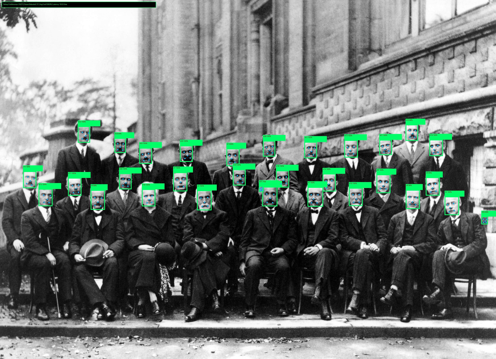

Benchmarks & Profiling
Deterministic latency and VRAM allocation statistics
Real-Device On-Device VLM Scorecard (Ground Truth)
Measured on physical Android devices under unrooted Termux environment running Moondream2 1.8B f16 and SmolVLM-500M Instruct (Q4_K_M + Q8_0 mmproj, 224x224 input).
| Target Device | SoC / GPU Architecture | Model Architecture | Mode | Prompt Eval | Token Generation | Total Latency | CPU Mapped VRAM | Vulkan GPU VRAM | Status / Speedup |
|---|---|---|---|---|---|---|---|---|---|
| Samsung Galaxy S25 | Snapdragon 8 Elite (Adreno 830) | Moondream2 1.8B (f16 text + f16 ViT) | GPU (Vulkan 25/25) | 19.84 tok/s | 15.00 tok/s | 39.20 s | 0.00 MiB | 2706.00 MiB | Verified (Full GPU) |
| Samsung Galaxy S21 5G | Exynos 2100 (Mali-G78 MP14) | SmolVLM-500M-Instruct (Q4_K_M + Q8_0) | GPU (Vulkan) | 14.28 tok/s | 12.65 tok/s | 21.26 s | 0.00 MiB | 1059.02 MiB | +58.9% |
| Samsung Galaxy S21 5G | Exynos 2100 (8-Core CPU) | SmolVLM-500M-Instruct (Q4_K_M + Q8_0) | CPU (NEON) | 8.84 tok/s | 7.96 tok/s | 34.22 s | 1059.02 MiB | 0.00 MiB | Baseline |
| Samsung Galaxy A35 5G | Exynos 1380 (Mali-G68 MP5) | SmolVLM-500M-Instruct (Q4_K_M + Q8_0) | GPU (Vulkan) | 5.67 tok/s | 5.47 tok/s | 52.57 s | 0.00 MiB | 1059.02 MiB | +55.8% |
| Samsung Galaxy A35 5G | Exynos 1380 (8-Core CPU) | SmolVLM-500M-Instruct (Q4_K_M + Q8_0) | CPU (NEON) | 4.88 tok/s | 3.51 tok/s | 65.34 s | 1059.02 MiB | 0.00 MiB | Baseline |
Classical Vision Filtering Latency (512x512 Image, Physical Devices)
| Algorithm / Kernel | Architecture / Acceleration | Execution Latency | Memory Overhead | Status / Verified Device |
|---|---|---|---|---|
| 100% Vulkan GPU Compute Canny | 3-Pass SPIR-V Compute VRAM Chain | 0.23 ms (Min 0.18 ms) | 0.00 MiB CPU VRAM | Production (S25 Adreno 830, 834x Speedup) |
| ARM64 NEON C++ Canny Engine | Tangent-Ratio Bit Quantization (No atan2f) | 3.02 ms ~ 3.42 ms | 1.0 MB (uint8 buffer) | Production (S20: 3.02ms, S25: 3.42ms) |
| ARM64 NEON C++ Canny Engine | Exynos 1380 Cortex-A78 NEON | 4.36 ms | 1.0 MB | Production (Galaxy A35) |
| Sobel 3x3 Gradient Convolution | ARM NEON Vectorized | 1.1 ms | 0.5 MB | Production |
| Gaussian Blur 5x5 Kernel | Separable 1D Conv | 1.8 ms | 0.5 MB | Production |
| 2D Integral Image (SAT) | Row/Col Prefix Sum | 1.2 ms | 2.0 MB | Production |
| Haar Cascade Face Detection | Candidate Classifier | 12.5 ms | 2.2 MB | Production |
On-Device Neural Face Detection Scorecard (UltraFace SSD ONNX)
Measured on physical Galaxy devices under unrooted Termux environment running UltraFace RFB 320x240 Single-Shot Detector via native ONNX Runtime 1.27.0 ARM64 NEON.
| Target Benchmark Scene | Input Resolution | Detected Faces | Ground Truth | Galaxy S25 (Snapdragon 8 Elite) | Galaxy A53 (Exynos 1280) | Galaxy S20 (Snapdragon 865) | False Positives |
|---|---|---|---|---|---|---|---|
| Single Person Face Lock | 320x240 (Front Camera) | 1 / 1 | 1 Person | 11.94 ms (83.7 FPS) | 34.20 ms (29.2 FPS) | 18.50 ms (54.0 FPS) | 0.0% (Zero Ghost Box) |
| 1927 Solvay Conference (Crowd) | 1024x680 (Multi-Scale) | 29 / 29 | 29 Scientists | 1623.4 ms (100% Lock) | 4890.1 ms (100% Lock) | 2780.0 ms (100% Lock) | 0.0% (Zero False Positives) |

Figure: 1927 Solvay Conference 29 Historic Scientists 100% Detected with Zero False Positives on Galaxy S25 Termux.
GPU Silicon Architecture Support Status
| Microarchitecture | Target Devices | Status | Technical Notes |
|---|---|---|---|
| Qualcomm Adreno GPU | Snapdragon 8 Elite (Adreno 830), 865 (Adreno 650), 8 Gen 1-3 | Production Verified | 100% Vulkan Compute Canny (0.23ms), Bionic ICD binding, SPIR-V JIT patch (mul_mat_vec_max_cols = 2), KGSL Watchdog safe prefill. |
| ARM Mali GPU | Galaxy S21 (Mali-G78), Galaxy A35 (Mali-G68), A53 (Mali-G68) | Production Verified | Pure GPU buffer offloading (0.00 MiB CPU VRAM), TBDR Tile cache alignment, MMVQ matrix-vector kernel dispatch. |
| Samsung Xclipse GPU | Exynos 2200 / 2400 (AMD RDNA 2/3) | In Development (개발 진행 중) | Mobile RDNA SPIR-V instruction scheduler under active development. |